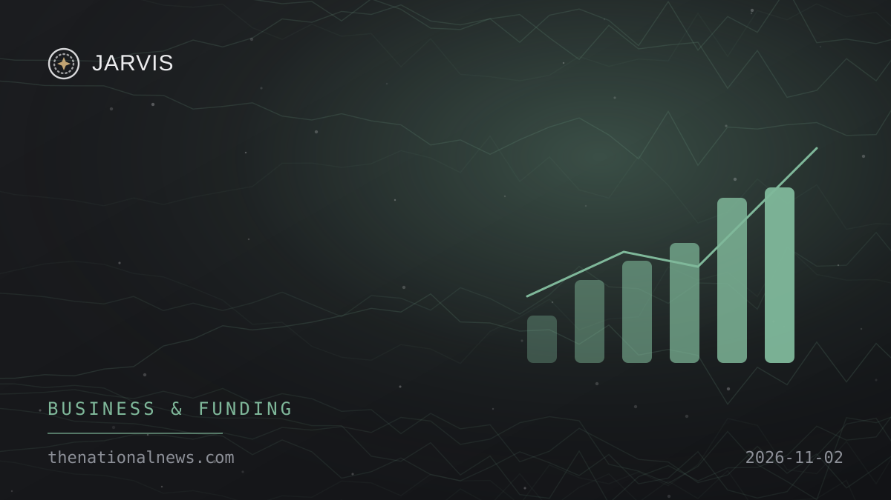

Lead · Business & Funding
Abu Dhabi signs OpenAI deals to run government services on UAE-hosted AI
Abu Dhabi's government and OpenAI launched a Machine-Readable Government initiative, already piloted on food imports, alongside agreements with Mubadala and G42's Inception42. The deals followed a meeting between Crown Prince Sheikh Khaled bin Mohamed and Sam Altman.